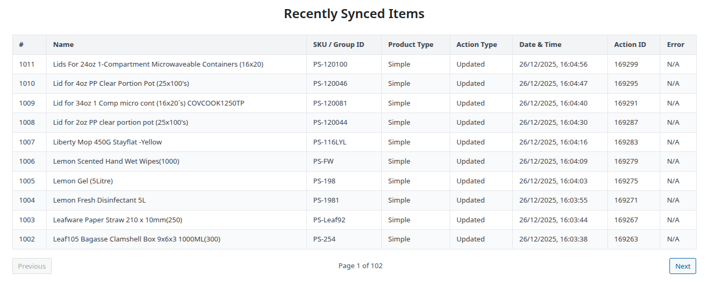
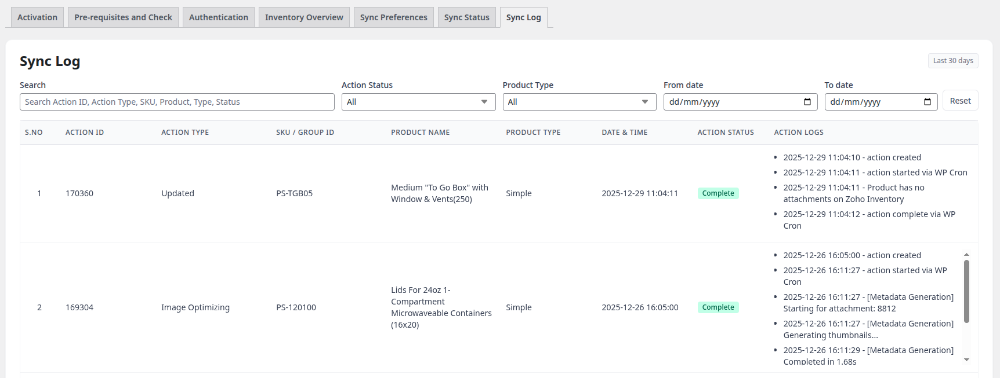

Sync Status & Monitoring¶
Track your synchronization progress in real-time and review sync history with comprehensive logging.
Sync Status Dashboard¶
Access the sync monitoring interface at LZ SKU Sync > Sync Status.

Status Indicators¶
The dashboard displays the current synchronization status with clear visual indicators.
Available Statuses¶
🔵 Not Started
- No sync has been initiated yet
- Ready to start first sync
- Configure preferences and click "Start Sync"
🟡 In Progress
- Active synchronization running
- Progress bar shows completion percentage
- Products being processed in background
🟠 Paused
- Sync temporarily stopped by user
- Queue preserved
- Click "Resume" to continue
🔴 Cancelled
- Sync terminated by user
- Queue cleared
- Cannot be resumed
🟢 Completed
- All products processed successfully
- Review results in "Recently Synced Items"
- Ready for next sync
Progress Metrics¶
When a sync is active, real-time metrics are displayed:
Key Metrics¶
Total Products
- Number of products in sync queue
- Includes simple products and variations
Synced
- Successfully processed products
- Increments in real-time
Failed
- Products that encountered errors
- Check logs for error details
Pending
- Products waiting in queue
- Decreases as sync progresses
Progress Percentage
- Visual progress bar (0-100%)
- Updates automatically
Auto-Refresh¶
The status dashboard automatically refreshes: - Every 3 seconds during active sync - Updates progress metrics live - No page reload required
Recently Synced Items¶
View the last 30 days of sync activity in a real-time table.
Table Columns¶
| Column | Description |
|---|---|
| Product Name | Name from Zoho Inventory |
| SKU | Product SKU |
| Type | Simple, Group, or Variation |
| Action | Created, Updated, Failed, Image Upload, etc. |
| Date | Timestamp of sync event |
| Action ID | Link to Action Scheduler details |

Table Features¶
Pagination - 10 items per page - Navigate with Previous/Next buttons - Page numbers for quick jumping
Auto-Refresh
- Updates every 3 seconds during sync
- New items appear at top automatically
- No manual refresh needed
Action Types¶
The "Action" column shows what happened to each product:
Product Actions¶
- Created - New product created in WooCommerce
- Updated - Existing product updated
- Failed - Product sync encountered an error
Variation Actions¶
- Created Variation - New variation created
- Updated Variation - Existing variation updated
- Variation Failed - Variation sync error
Image Actions¶
- Image Upload - Images uploaded to product
- Image Optimization - Thumbnail generation completed
- Image Failed - Image processing error
Parent Product Actions¶
- Parent Images Assigned - Gallery set for variable product
- Parent Update Failed - Variable product image error
Sync Log (30-Day History)¶
Detailed log of all synchronization activities:
What's Logged¶
- ✅ Manual sync start/complete events
- ✅ Webhook sync triggers
- ✅ Product create/update jobs
- ✅ Image processing jobs
- ✅ Variation processing jobs
- ✅ Parent image assignment jobs
- ✅ Error details with stack traces
Accessing Full Logs¶
For detailed technical logs:
- Go to LZ SKU Sync > Sync Log
- You can view the logs for the last 30 days
- Use advanced search, filters, and sorting features
Tip
See the Sync Log Guide → for complete documentation on using search, filters, and troubleshooting with the Sync Log.

Monitoring Best Practices¶
During Initial Sync¶
- ✅ Watch the progress bar to estimate completion time
- ✅ Monitor "Recently Synced Items" for errors
- ✅ Keep browser tab open (or close - sync continues in background)
- ✅ Check Action Scheduler if progress stalls
Real-Time Webhook Monitoring¶
- ✅ Watch for new items appearing in "Recently Synced Items"
- ✅ Verify timestamps match Zoho changes
- ✅ Check webhook status indicator (green = active)
- ✅ Review failed items immediately
Regular Health Checks¶
- Check dashboard weekly
- Review failed items from last 30 days
- Verify sync frequency setting
- Confirm webhook status (if applicable)
Understanding Sync Timeline¶
Manual Sync Timeline¶
1. Click Start Sync (instant)
2. Fetch inventory from Zoho (10-60 seconds)
3. Compare SKUs (instant)
4. Queue products (instant)
5. Process batch 1 (varies by product count)
- Create/update products
- Download images
- Process variations
6. Progress updates every 3 seconds
Estimated Time:
- 50 products: 5-10 minutes
- 100 products: 10-20 minutes
- 500 products: 60-120 minutes
Time varies based on images, variations, and server performance
Webhook Sync Timeline¶
1. Change in Zoho Inventory (instant)
2. Webhook POST to WordPress (1-5 seconds)
3. Signature verification (instant)
4. Fetch item details (1-2 seconds)
5. Enqueue sync job (instant)
6. Process product (10-30 seconds)
7. Appears in "Recently Synced Items"
Total Time: 15-40 seconds from Zoho change to WooCommerce update
Sync Performance Indicators¶
Healthy Sync Signs¶
- ✅ Progress bar advancing steadily
- ✅ "Synced" count increasing
- ✅ "Pending" count decreasing
- ✅ Low "Failed" count (0-2%)
- ✅ Actions completing in Action Scheduler
Warning Signs¶
- ⚠️ Progress bar stuck for >5 minutes
- ⚠️ High "Failed" count (>10%)
- ⚠️ "Pending" actions in Sync Log
- ⚠️ PHP errors in debug log
- ⚠️ Webhook status showing inactive (when should be active)
Troubleshooting Monitoring¶
Metrics Not Updating¶
Problem: Progress stuck, numbers not changing
Solution:
- Hard refresh browser (Ctrl+F5 or Cmd+Shift+R)
- Check LZ SKU Sync > Sync Log for queue status (see Sync Log Guide)
- Review PHP error logs
Recently Synced Items Empty¶
Problem: No items showing after sync
Solution:
- Sync may have failed to start
- Check Action Scheduler for errors
- Verify authentication is still valid
- Review sync log for entries
Action Scheduler Links Broken¶
Problem: Clicking Action ID shows "Not Found"
Solution:
- Actions auto-delete after 30 days
- Only recent actions have detail logs
- Older actions show in sync history but logs are pruned
Next Steps¶
- Learn About Webhooks → - Set up real-time monitoring
- Troubleshooting Guide → - Fix monitoring issues
- View Inventory Overview → - Compare Zoho and WooCommerce
Support¶
Questions about monitoring?
- 📧 Email: sales@linkzoho.com, support@krenovate.com
- Include screenshots of sync status when reporting issues